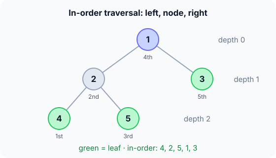

Prerequisites
- Recursion: a function that calls itself on a smaller input.
- Structs and pointers in C.
- Linked lists: a tree node is a list node with two "next" pointers.
The analogy
Everyday analogy
Think of a family tree drawn upside down: one ancestor at the top, each person with up to two children below them.
A binary tree has the same shape. The top node is the root, nodes without children are leaves, and the number of generations below the root is the tree's height.
How it works
Start with a small tree on paper
The tree is: root 1; children of 1 are 2 (left) and 3 (right); children of 2 are 4 and 5. Predict, then open "Check".
Example: predict before you read
Step 1. Name the leaves and give the height (counting edges on the longest root-to-leaf path).
Check
Leaves: 4, 5 and 3. The longest path is 1 → 2 → 4, which has 2 edges, so the height is 2.
Step 2. Cover the next line and guess: the in-order traversal (left, node, right) visits which order?
Check
4, 2, 5, 1, 3. Finish the whole left subtree of 1 before visiting 1, then do the right subtree.
Step 3. Insert 6 as the left child of 3. Predict the new height and the new in-order sequence.
Check
The height stays 2, since 6 is at depth 2. In-order becomes 4, 2, 5, 1, 6, 3.

Quick recall: Before reading further, cover the text above and say out loud: what is the difference between depth and height?
Check your answer
Depth is how far a node is from the root; height is the longest distance from a node down to a leaf. The tree's height is the root's height.
Finish the picture: the other traversals
Use the original tree (1; 2, 3; 4, 5 under 2).
- Pre-order (node, left, right). Predict the sequence.
Check
1, 2, 4, 5, 3.
- Post-order (left, right, node) and level order (row by row). Predict both.
Check
Post-order: 4, 5, 2, 3, 1. Level order: 1, 2, 3, 4, 5.
Quick recall: Without scrolling up, say out loud: in pre-order, when is a node visited compared with its children?
Check your answer
Before both of them: node, then left subtree, then right subtree.
The rule in plain words
A binary tree is either empty, or a node with a value, a left subtree and a right subtree, each of which is a binary tree.
Almost every tree algorithm follows that definition: handle the empty tree, recurse on the two subtrees, and combine the results at the node.
Quick recall: Before you read the code, write how you would compute the height of a tree recursively, in your own words. Then check below.
Check your answer
An empty tree has height −1. Otherwise compute the heights of the left and right subtrees, take the bigger one, and add 1 for the edge to them.
The code
Read this code after you have done the traversal by hand. It will make more sense.
typedef struct Node { int val; struct Node *left, *right; } Node;
int height(Node *t) { /* edges on the longest root-to-leaf path */
if (t == NULL) return -1; /* empty tree */
int l = height(t->left), r = height(t->right);
return 1 + (l > r ? l : r);
}
int inorder(Node *t, int out[], int k) { /* writes values into out, returns new k */
if (t == NULL) return k;
k = inorder(t->left, out, k); /* left subtree first */
out[k++] = t->val; /* then the node */
return inorder(t->right, out, k); /* then the right subtree */
}Definition
What you just did, in one line: a binary tree is a set of nodes where each node has at most two children (left and right), with one root at the top.
A traversal visits every node once: pre-order (node first), in-order (node in the middle), post-order (node last) or level order (row by row).
graph TD
A((1)) --> B((2))
A --> C((3))
B --> D((4))
B --> E((5))
How fast is it?
Quick recall: Before looking at the formula, predict: how many nodes can a binary tree of height 2 hold at most?
Check your answer
7: 1 + 2 + 4, one full level each.
Level $d$ holds at most $2^d$ nodes, so a tree of height $h$ holds at most:
$$n \;\le\; 1 + 2 + 4 + \dots + 2^h \;=\; 2^{h+1} - 1 \quad\Longrightarrow\quad h \;\ge\; \lfloor \log_2 n \rfloor$$So the best possible height is about $\log_2 n$, and the worst (every node with one child) is $n - 1$. Every traversal visits each node once: $O(n)$.
| Operation | Cost | Why |
|---|---|---|
| Any traversal | $O(n)$ | Each node is visited once |
| Height, size, count leaves | $O(n)$ | One traversal |
| Find a value (no ordering) | $O(n)$ | It could be in either subtree |
| Insert at a known free spot | $O(1)$ | Set one child pointer |
| Recursion stack | $O(h)$ | One frame per level, from $O(\log n)$ to $O(n)$ |
Warning
Height conventions differ: some books count nodes on the longest path (so a single node has height 1), others count edges (height 0). Always say which one you use.
Exam tip
The classic exam question gives a tree and asks for pre-, in- and post-order. Trace with a finger: pre-order writes a node when you first pass it on the left, in-order when you pass underneath, post-order when you pass on the right.
Common mistakes
- Mixing up in-order and pre-order: in-order visits the node between its subtrees.
- Returning 0 instead of −1 for an empty tree, which makes every height one too big under the edge convention.
- Forgetting the empty-tree base case, which dereferences
NULL.
Try it yourself
Exercise 1 (warm-up)
A tree has root A, children B (left) and C (right), and D as the right child of B. Give the pre-order traversal.
Hint
Node, then left subtree, then right subtree.
Answer
A, B, D, C.
Exercise 2 (a bit harder)
A tree's pre-order is 1, 2, 4, 3 and its in-order is 4, 2, 1, 3. Draw it. Write your answer down before you open it.
Show answer
Pre-order starts with the root, 1. In in-order, 4, 2 are left of 1 and 3 is right of it. Within {4, 2}, pre-order shows 2 first, so 2 is the left child of 1 and 4 is the left child of 2. 3 is the right child of 1.
Did you know?
Did you know?
The tree is rebuilt in exercise 2 from two traversals: pre-order plus in-order always pins down a binary tree with distinct values, but pre-order plus post-order does not.
Compilers turn your code into a tree (the syntax tree), and evaluating (2 + 3) * 4 is a post-order traversal: compute the children, then apply the operator.
Key points to remember
If you remember one thing from each line, remember the because.
- Tree algorithms are recursive because a tree is a node plus two smaller trees.
- Traversals are $O(n)$ because each node is visited exactly once.
- A tree of $n$ nodes has height at least $\lfloor \log_2 n \rfloor$ because level $d$ can hold at most $2^d$ nodes.
- In-order puts the node in the middle because it finishes the left subtree before the node and the right subtree after.
- Recursion depth equals the height because each call goes one level down.
Self-check questions
Answer these in order, out loud. They follow the page, so your answers become the script of your video.
- How is a binary tree like an upside-down family tree?
Sample answer
One ancestor at the top (the root), each person with up to two children below, and people without children are the leaves.
- Give the leaves, the height and the in-order traversal of the tree 1; 2, 3; 4, 5 under 2.
Sample answer
Leaves 4, 5, 3; height 2; in-order 4, 2, 5, 1, 3.
- Why does
heightreturn −1 for an empty tree?A good answer checks a single node.
Sample answer
A single node should have height 0 edges. With −1 for empty children, it gets 1 + max(−1, −1) = 0, which is right.
- So what is a binary tree, in one sentence?
Sample answer
A collection of nodes where each node has at most a left and a right child, starting from one root.
- What are the four standard traversals, and how do they differ?
Sample answer
Pre-order visits the node before its subtrees, in-order between them, post-order after them, and level order goes row by row from the root.
- Why is the best possible height about $\log_2 n$?
A good answer counts nodes per level.
Sample answer
Each level can at most double the number of nodes, so $n$ nodes need at least about $\log_2 n$ levels.
- What do traversals, height and search cost on a general binary tree?
Sample answer
All $O(n)$: each needs to look at every node in the worst case.
- If you had to teach this to a friend in 2 minutes, what would you leave out, and why?
Sample answer
I'd leave out the height conventions and rebuilding from two traversals. I'd keep the family-tree analogy, the 5-node example with its traversals, and "recursion: node plus two subtrees".
External resources
- VisuAlgo: Binary trees: animate pre-, in- and post-order traversals.
- GeeksforGeeks: Binary tree: terminology, types and traversal code.
- Wikipedia: Binary tree: definitions, properties and counting formulas.
Videos
- YouTube search: tree traversals: pick a walkthrough of all three depth-first orders.